식음료 브랜드 642
스타벅스부터 코카-콜라까지, 일상을 채우는 음료·식품 브랜드의 역사와 전략을 연결합니다. 브랜드 아틀라스에 수록된 식음료 브랜드 642개를 로고와 함께 모았습니다. 각 항목은 설립 배경, 브랜드 아이덴티티, 로고 변천, 제품과 서비스, 현재 상태를 정리한 상세 페이지로 이어집니다.
다른 산업 보기
기원 국가가 확인된 브랜드는 451개이며 미국 101개, 한국 69개, 독일 53개, 벨기에 40개, 영국 32개 순으로 많습니다. 설립연도가 확인된 브랜드는 478개이며 가장 오래된 곳은 1801년, 가장 최근은 2024년에 시작했습니다. 시기별로는 1900년 이전 152개, 1900~1949년 91개, 1950~1999년 166개, 2000년 이후 69개입니다. 수록 자료로는 로고 이미지 586개, 로고 변천 자료 35개, 연혁 타임라인 108개를 갖췄습니다. 이 가운데 542개는 공식 웹사이트가 일치하는 위키데이터 개체로 연결해 두었습니다.
식음료 브랜드 목록
품질 점수 순 상위는 로고 타일로, 나머지는 가나다순 목록으로 보입니다.
네슬레(Nestlé)는 스위스 브베에 본사를 둔 세계 최대 규모의 식음료 다국적 기업이다.
 말보로Marlboro미국 · 1924년
말보로Marlboro미국 · 1924년말보로(Marlboro)는 필립 모리스가 1924년 도입한 미국의 담배 브랜드이다.
맥도날드는 가장 평범한 소비재를 세계 어디서나 읽히는 대중문화의 기호로 바꾼 브랜드다.
 하이네켄Heineken네덜란드 · 1864년
하이네켄Heineken네덜란드 · 1864년하이네켄(Heineken)은 1864년 네덜란드 암스테르담에서 창립된 하이네켄 N.V.의 플래그십 페일 라거 맥주 브랜드이다.
 코카-콜라Coca-Cola1886년
코카-콜라Coca-Cola1886년코카-콜라는 음료의 맛보다 함께 마시는 순간의 감정을 브랜드 자산으로 축적해 왔다.
버드와이저(Budweiser)는 아돌푸스 부시가 1876년 출시한 미국의 아메리칸 라거 맥주 브랜드이다.
 써브웨이Subway미국 · 1965년
써브웨이Subway미국 · 1965년써브웨이(Subway)는 1965년 미국에서 시작된 서브마린 샌드위치 프랜차이즈이다.
 스타벅스Starbucks1971년
스타벅스Starbucks1971년스타벅스는 커피를 팔면서 동시에 사람들이 머무는 시간과 공간의 감각을 설계한다.
 도미노피자Domino's Pizza미국 · 1960년
도미노피자Domino's Pizza미국 · 1960년도미노피자(Domino's Pizza)는 1960년 미국에서 시작된 글로벌 피자 배달·테이크아웃 프랜차이즈이다.
돔 페리뇽(Dom Pérignon)은 프랑스 모엣 샹동이 생산하는 빈티지 프레스티지 퀴베 샴페인 브랜드이다.
 켈로그KELLOGG’s미국 · 1906년
켈로그KELLOGG’s미국 · 1906년켈로그(Kellogg's)는 윌 키스 켈로그가 1906년 설립한 미국의 아침식사 시리얼 브랜드이다.
 엔제리너스Angel-in-us
엔제리너스Angel-in-us엔제리너스(Angel-in-us)는 롯데GRS가 운영하는 한국의 커피전문점 프랜차이즈다.
레드불(Red Bull)은 1987년 오스트리아에서 출시된 세계 최대 에너지음료 브랜드이다.
 모엣&샹동Moet & Chandon프랑스
모엣&샹동Moet & Chandon프랑스모엣&샹동(Moët & Chandon)은 1743년 프랑스 에페르네에서 설립된 세계적인 샴페인 하우스이다.
 피자헛Pizza Hut미국 · 1958년
피자헛Pizza Hut미국 · 1958년피자헛(Pizza Hut)은 1958년 미국 캔자스에서 창립된 세계 최대 규모의 피자 프랜차이즈 브랜드이다.
 해태제과Haitai Confectionery한국 · 1945년
해태제과Haitai Confectionery한국 · 1945년해태제과(Haitai Confectionery & Foods)는 허니버터칩으로 유명한 한국의 제과 기업으로, 1945년 창업했다.
네스카페(Nescafé)는 네슬레가 생산·판매하는 인스턴트 커피 브랜드이다.
 바카디BACARDÍ1862년
바카디BACARDÍ1862년바카디(Bacardí)는 1862년 쿠바에서 설립된 세계적인 럼 브랜드이다.
 뚜레쥬르Tous les Jours한국 · 1997년
뚜레쥬르Tous les Jours한국 · 1997년뚜레쥬르(Tous les Jours)는 CJ푸드빌이 운영하는 대한민국의 베이커리 프랜차이즈다.
펩시(Pepsi)는 1893년 미국 노스캐롤라이나주 뉴번의 약사 케일럽 브래덤이 만든 탄산음료에서 출발해 1898년 '펩시콜라'로 개명된 음료…
 하인즈Heinz미국 · 1869년
하인즈Heinz미국 · 1869년하인즈(Heinz)는 1869년 헨리 J.
 투썸플레이스A Twosome Place한국 · 2002년
투썸플레이스A Twosome Place한국 · 2002년투썸플레이스(A Twosome Place)는 2002년 출범한 한국의 프리미엄 디저트 카페 브랜드로, 현재 칼라일그룹이 소유한다.
버거킹Burger King1954년버거킹(Burger King)은 1953년 미국 플로리다주 잭슨빌에서 인스타-버거킹으로 출발해 1954년 마이애미에서 본격 운영을 시작한…
 남양유업Namyang Dairy한국 · 1964년
남양유업Namyang Dairy한국 · 1964년남양유업(Namyang Dairy Products)은 1964년 창립한 한국의 대표 유제품 기업이다.
 고디바GODIVA벨기에 · 1926년
고디바GODIVA벨기에 · 1926년고디바(Godiva)는 1926년 벨기에 브뤼셀에서 창립된 프리미엄 초콜릿 브랜드이다.
코로나 엑스트라Corona Extra멕시코 · 1925년코로나 엑스트라(Corona Extra)는 멕시코 그루포 모델로가 양조하는 페일 라거 맥주이다.
 롯데리아Lotteria한국 · 1972년
롯데리아Lotteria한국 · 1972년롯데리아(Lotteria)는 롯데그룹 계열 롯데GRS가 운영하는 한국 1위 버거 프랜차이즈로, 1979년 한국에 진출했다.
 맘스터치Mom's Touch1997년
맘스터치Mom's Touch1997년맘스터치(Mom's Touch)는 싸이버거로 유명한 한국의 버거·치킨 프랜차이즈로, 1997년 시작됐다.
 동아오츠카Dong-A Otsuka한국 · 1979년
동아오츠카Dong-A Otsuka한국 · 1979년동아오츠카(Dong-A Otsuka)는 이온음료 '포카리스웨트'와 비타민음료 '오로나민C'를 생산하는 한국·일본 합작 음료 기업이다.
 빽다방Paik's Coffee한국 · 2006년
빽다방Paik's Coffee한국 · 2006년빽다방(Paik's Coffee)은 더본코리아가 운영하는 한국의 저가 커피 프랜차이즈다.
 앱솔루트ABSOLUT
앱솔루트ABSOLUT앱솔루트는 보드카 병 하나를 광고와 예술의 반복 가능한 캔버스로 만든 브랜드다.
웅진식품Woongjin Food한국 · 1976년웅진식품(Woongjin Food)은 쌀음료 '아침햇살'과 보리차 음료 '하늘보리'로 알려진 한국의 비알코올 음료 제조 기업이다.
 샘표Sempio한국 · 1946년
샘표Sempio한국 · 1946년샘표(Sempio)는 1946년 설립된 대한민국에서 가장 오래된 간장·발효식품 브랜드다.
 이탈리Eataly미국 · 2004년
이탈리Eataly미국 · 2004년이탈리(Eataly)는 이탈리아 고품질 식재료의 판매·취식·학습을 한 지붕 아래 결합한 이탈리아식 식료품 마켓이다.
 매직스푼Magic Spoon Treats2019년
매직스푼Magic Spoon Treats2019년매직스푼은 그렉 세위츠와 가비 루이스가 2019년 미국에서 선보인 저당·고단백 시리얼 브랜드다.
이노센트Innocent이노센트(innocent)는 1999년 영국에서 출범한 스무디·주스 브랜드로, 스무디 외에 주스·헬스 샷·코코넛 워터 등으로 제품군을 넓혀왔다.
 보해양조Bohae한국 · 1950년
보해양조Bohae한국 · 1950년보해양조(Bohae)는 호남권을 기반으로 소주 '잎새주'와 매실주 '매취순'을 생산하는 한국의 주류 제조 기업이다.
글렌피딕Glenfiddich1887년글렌피딕(Glenfiddich)은 1887년 스코틀랜드 더프타운에서 탄생한 싱글몰트 스카치 위스키 브랜드이다.
 컴포즈커피Compose Coffee한국 · 2014년
컴포즈커피Compose Coffee한국 · 2014년컴포즈커피(Compose Coffee)는 2014년 부산에서 시작된 한국의 저가 커피 프랜차이즈로, 2024년 필리핀 졸리비그룹이 지분을…
 리베나Ribena영국
리베나Ribena영국리베나는 블랙커런트(Ribes nigrum)를 원료로 한 영국의 대표적 과일 농축 음료 브랜드다.
 더본코리아TheBorn Korea한국
더본코리아TheBorn Korea한국더본코리아는 백종원이 이끄는 한국의 외식 프랜차이즈 기업으로, 빽다방·홍콩반점·새마을식당·한신포차 등 다수의 외식 브랜드를 한 회사 안에서…
스프라이트(Sprite)는 코카콜라가 1961년 선보인 레몬·라임 향 무카페인 탄산음료로, 전 세계 190개국 이상에서 판매되는 코카콜라의…
 립톤Lipton
립톤Lipton립톤(Lipton)은 토머스 립톤이 창시한 영국 기원의 글로벌 차 브랜드이다.
 매일유업Maeil Dairies한국 · 1969년
매일유업Maeil Dairies한국 · 1969년매일유업(Maeil Dairies)은 한국의 대표 유제품 기업으로, 1969년 설립됐다.
 할리스Hollys1998년
할리스Hollys1998년할리스(Hollys)는 KG그룹 계열이 운영하는 한국의 커피전문점 프랜차이즈다.
 크라운제과Crown Confectionery한국 · 1947년
크라운제과Crown Confectionery한국 · 1947년크라운제과(Crown Confectionery)는 크라운해태홀딩스를 지주회사로 하는 대한민국의 종합 제과 기업이다.
 SPC삼립SPC Samlip한국 · 1945년
SPC삼립SPC Samlip한국 · 1945년SPC삼립(SPC Samlip)은 1945년 창업한 상미당을 모태로 하는 SPC그룹 계열의 종합 제빵·식품 기업이다.
 롯데웰푸드Lotte Wellfood한국 · 1967년
롯데웰푸드Lotte Wellfood한국 · 1967년롯데웰푸드(Lotte Wellfood)는 빼빼로·가나 초콜릿으로 유명한 롯데그룹 계열 제과 기업으로, 1967년 롯데제과로 설립돼 2023년…
전체 목록
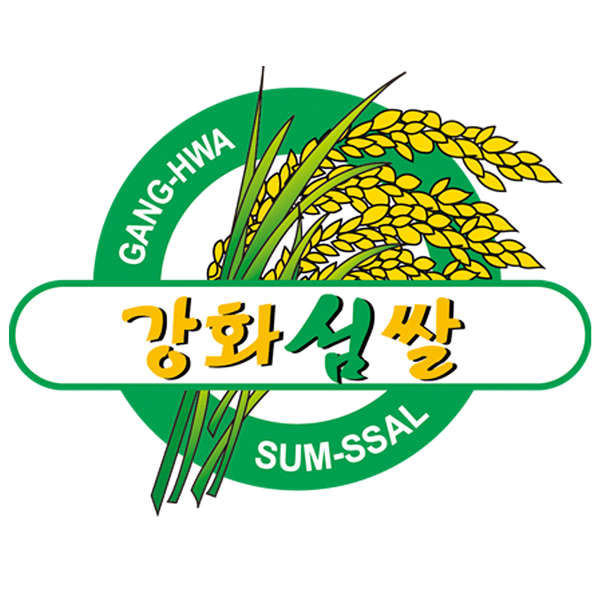
강화섬쌀 Ganghwa Seom Ssal인천 강화도 지역 농협이 관리하는 특산 쌀 공동 브랜드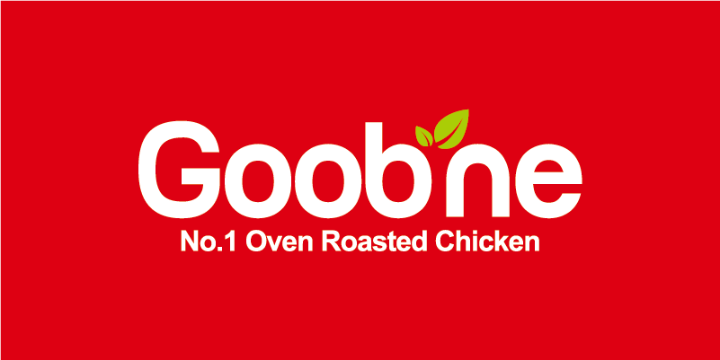
굽네치킨 Goobne Chicken오븐구이 조리로 튀김 일변도 치킨 시장을 차별화한 브랜드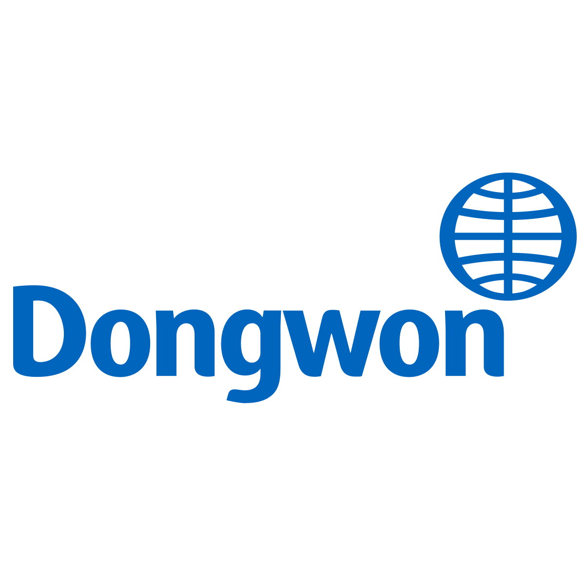
동원참치 Dongwon Tuna원양어업 역량을 참치캔이라는 대중 식품으로 전환한 브랜드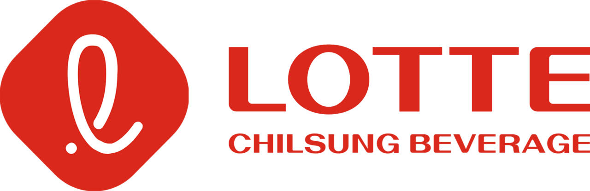
롯데칠성음료 Lotte Chilsung Beverage롯데칠성음료(Lotte Chilsung Beverage)는 칠성사이다로 유명한 한국의 대표 음료 기업으로, 롯데그룹 계열사다.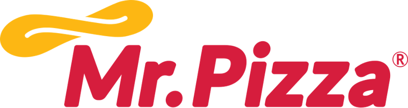
미스터피자 Mr. Pizza미스터피자(Mr. Pizza)는 대한민국의 피자 전문 브랜드이다.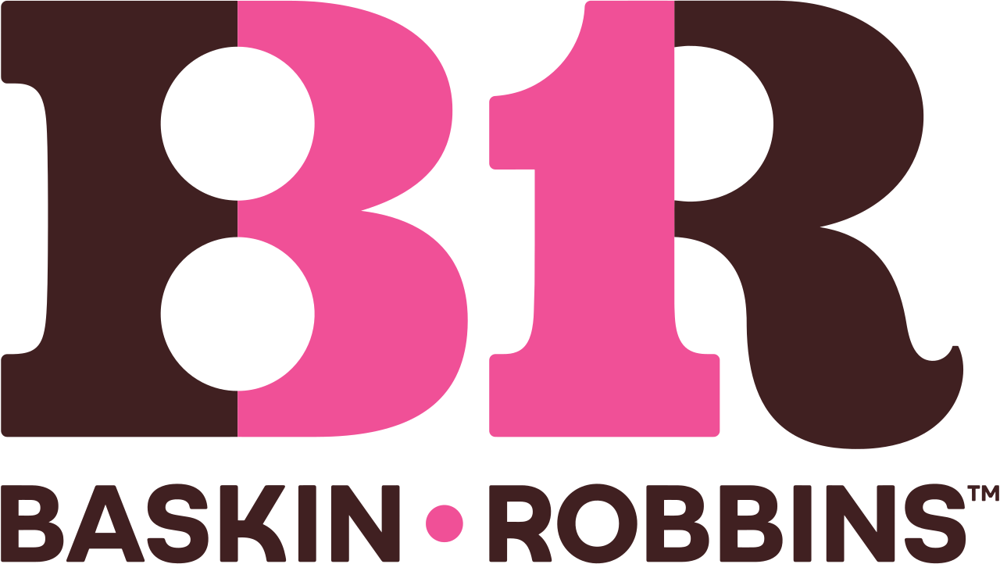
배스킨라빈스 Baskin Robbins Korea배스킨라빈스(Baskin Robbins Korea)는 SPC그룹 계열 비알코리아가 운영하는 미국 배스킨라빈스 아이스크림 브랜드의 한국 사업체다.백세주 baekseju백세주(baekseju)는 찹쌀을 기반으로 발효시켜 인삼을 비롯한 여러 약재로 향을 낸 한국의 발효 주류이다.버거 서비스 Burger Service버거 서비스는 프라하 외곽의 자동차 정비소와 주유소를 떠올리게 하는 콘셉트로 출발한 햄버거 레스토랑이다.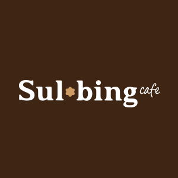
설빙 Sulbing인절미빙수로 빙수를 사계절 메뉴로 만든 브랜드설화 맥주 Snow beer설화 맥주(Snow beer)는 중국 선양시에서 유래한 라거 맥주 브랜드이다.성심당 Sungsimdang성심당은 대전을 대표하는 베이커리다.세인트 빈센트 비어 Saint Vincent Beer세인트 빈센트 비어(Saint Vincent Beer)는 1856년부터 1918년 사이 미국 펜실베이니아주 유니티 타운십의 세인트 빈센트 대수도원 수도사들이…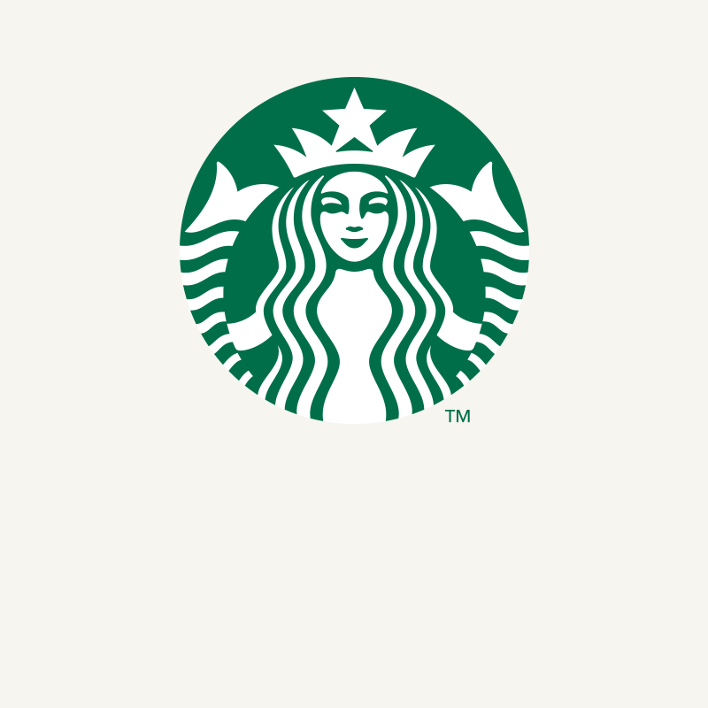
스타벅스코리아 Starbucks Korea스타벅스코리아(Starbucks Korea)는 미국 스타벅스 브랜드를 한국에서 운영하는 커피 전문점 체인으로, 운영법인은 에스씨케이컴퍼니다.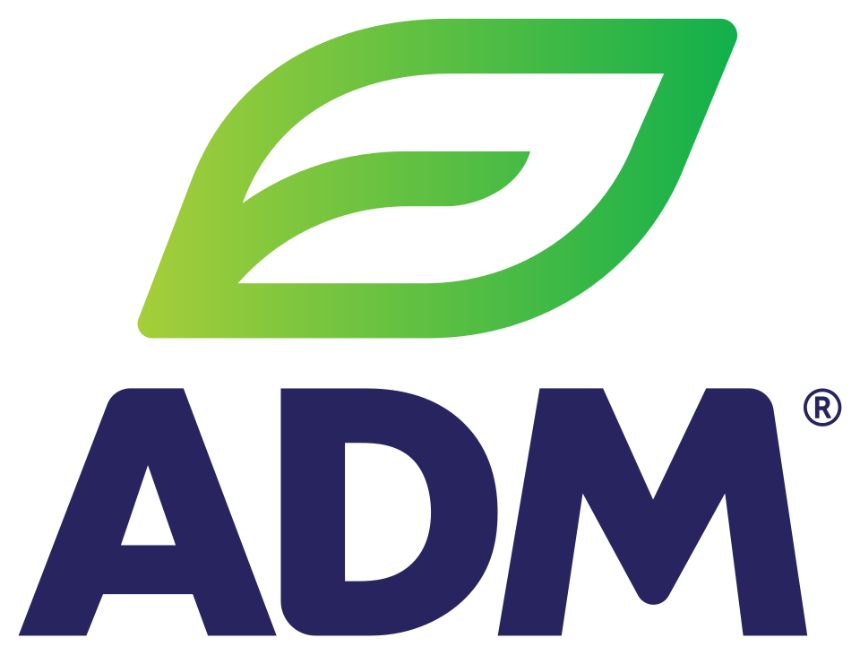
아처 대니얼스 미들랜드 Archer Daniels Midland아처 대니얼스 미들랜드(Archer Daniels Midland)는 농산물을 가공하고 원자재를 거래하며 저장과 운송 서비스도 제공하는 미국의 다국적 기업이다.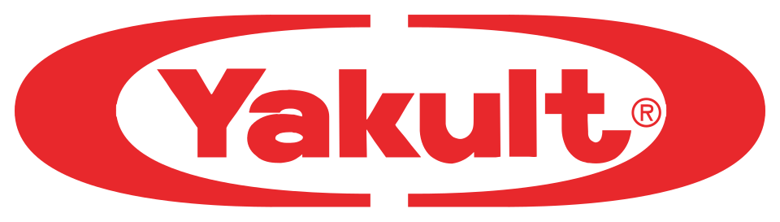
야쿠르트 Yakult야쿠르트(Yakult)는 일본의 야쿠르트 혼샤에서 제조·판매하는 유제품 유산균 음료이다.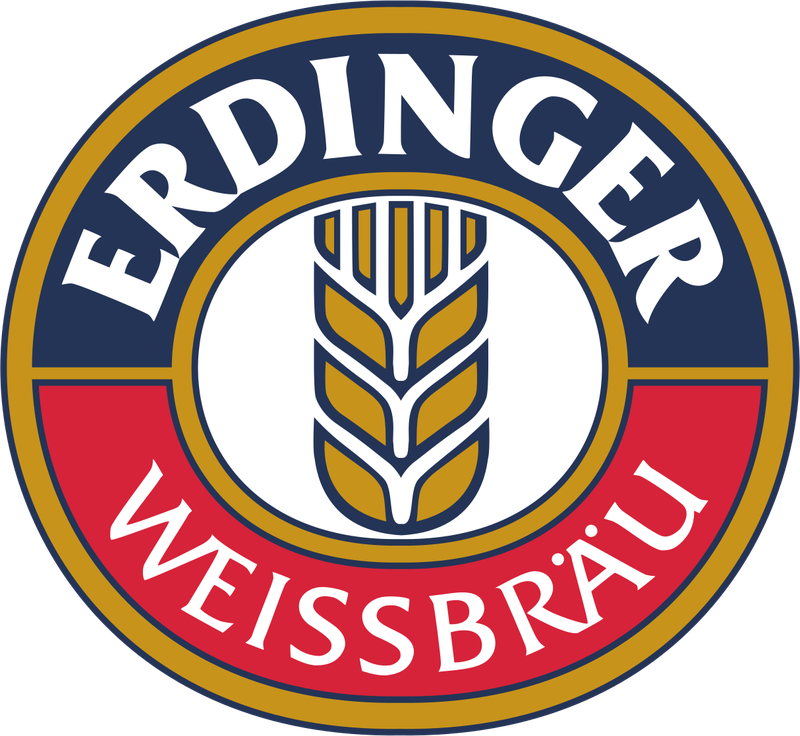
에르딩거 Erdinger에르딩거(Erdinger)는 독일 에르딩에 본사를 둔 양조장이자 그 맥주 브랜드이다.에비스 비어 Yebisu Beer에비스 비어(Yebisu Beer)는 삿포로 맥주의 맥아 100% 맥주 브랜드이다.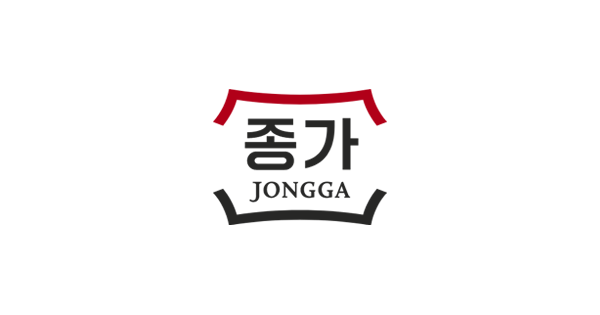
종가집 Jongga가정에서 담그던 김치를 포장 상품화한 국내 최초 수준의 김치 브랜드좋은데이좋은데이는 2006년 11월 8일 무학에서 출시하여 생산하고 있는 대한민국의 소주 제품 브랜드이다.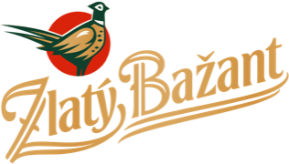
즐라티 바잔트 Zlatý Bažant즐라티 바잔트(Zlatý Bažant)는 1969년에 설립된 슬로바키아 맥주 브랜드이다.지비에츠 양조장 Żywiec Brewery지비에츠 양조장(Żywiec Brewery)은 폴란드 지비에츠에 본사를 둔 맥주 양조장이다.진라면 Jin Ramen진라면(Jin Ramen)은 오뚜기라면이 제조하고 오뚜기가 판매하는 대한민국의 라면 브랜드이다.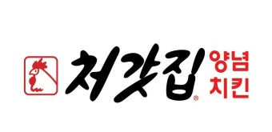
처갓집양념치킨 Chegajip Yangnyeom Chicken국내 양념치킨 카테고리를 개척한 원조 프랜차이즈처치스 치킨 Church's Texas Chicken처치스 치킨(Church's Texas Chicken)은 남부식 프라이드치킨을 전문으로 하는 미국의 패스트푸드 레스토랑 체인이다.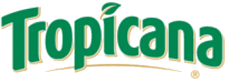
트로피카나 프로덕츠 Tropicana Products트로피카나 프로덕츠(Tropicana Products)는 미국의 과일 기반 음료 회사이다.트와이닝스 Twinings트와이닝스(Twinings)는 영국 햄프셔주 앤도버에 본사를 둔 차 판매 브랜드로, 커피와 핫초콜릿, 몰트음료 등도 함께 취급한다.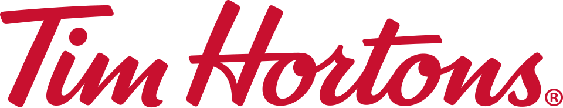
팀홀튼 Tim Hortons팀홀튼(Tim Hortons)은 커피와 도넛을 판매하는 캐나다의 커피 전문점이다.팅즈 Tingz팅즈(Tingz)는 천연 자일리톨 기반 츄잉껌 브랜드 페퍼스미스(Peppersmith)가 출시한 캔디 라인이다.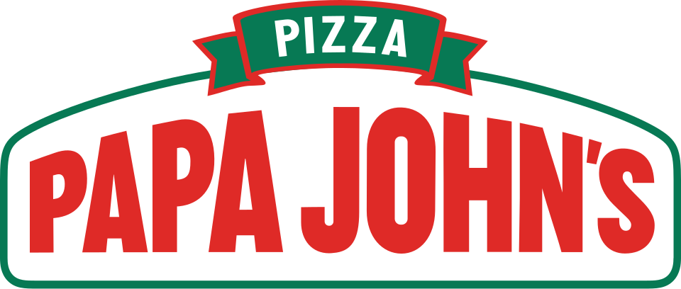
파파존스 Papa John's파파존스(Papa John's)는 미국에서 시작된 피자 체인점이다.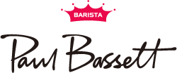
폴 바셋 Paul Bassett폴바셋(Paul Bassett)은 2009년 매일유업이 국내에 선보인 스페셜티 커피 전문점이다.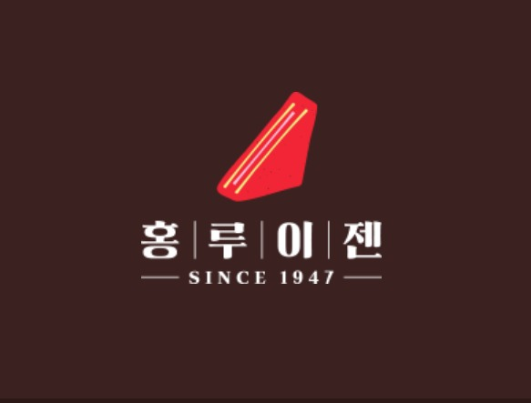
홍루이젠 Hong Rui Zhen대만식 샌드위치를 한국화한 도시락 프랜차이즈 선구자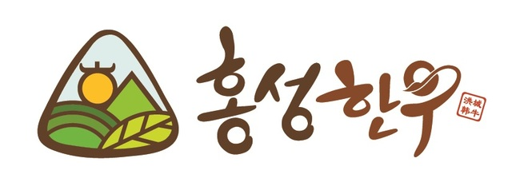
홍성한우 Hongseong Hanwoo충남 홍성 축산농가의 공동 한우 브랜드화요화요는 광주요의 주식회사 화요에서 생산하는 주류 브랜드로, 일반적인 희석식 소주가 아니라 누룩으로 발효한 술을 증류해 만드는 증류식 소주 브랜드이다.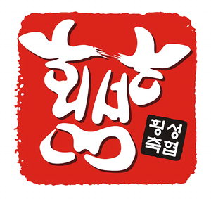
횡성한우협동조합 Hoengseong Hanwoo Cooperative강원 횡성군 한우 농가들의 협동조합형 지역 브랜드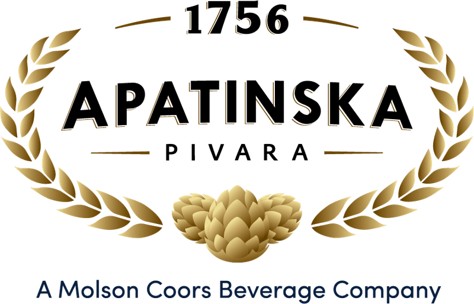
Apatinska BreweryApatinska Brewery는 세르비아 Apatin에 본사를 둔 양조회사이다.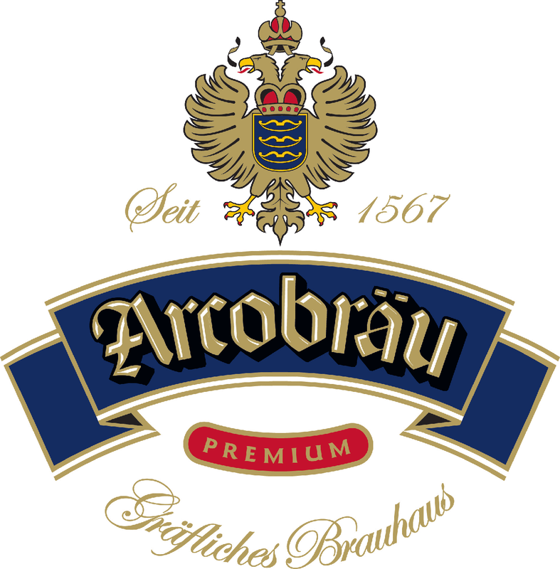
ArcobräuArcobräu는 독일 니더바이에른(Lower Bavaria)의 Moos 지방자치체에 있는 양조장이다.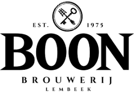
Brouwerij BoonBrouwerij Boon은 벨기에 브뤼셀 인근 렘베이크에 있는 양조장이다.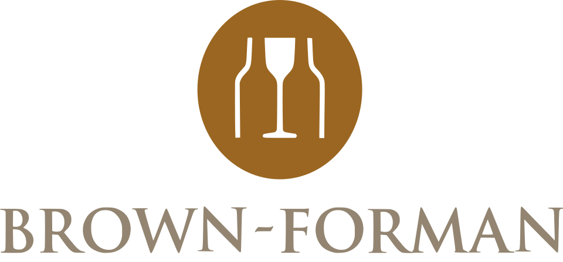
Brown-FormanBrown-Forman은 미국 루이빌에 기반을 둔 가족 지배 상장 주류·와인 회사이다.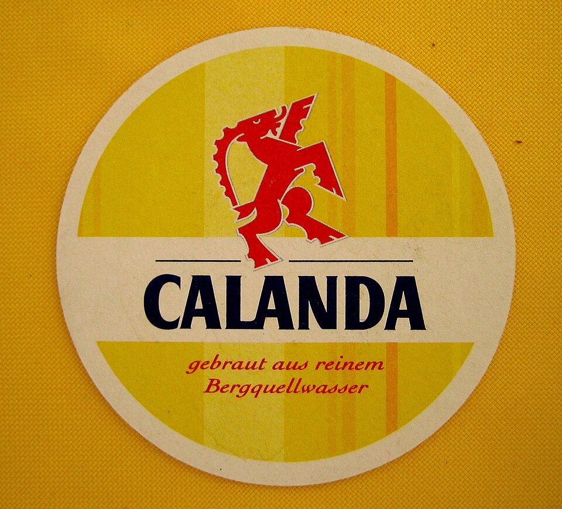
Calanda BräuCalanda Bräu는 독일어로 'Calanda 양조'를 뜻하는 이름의 양조장으로, 스위스 그라우뷘덴주 쿠어에 있으며 Heineken N.V.가 소유한다.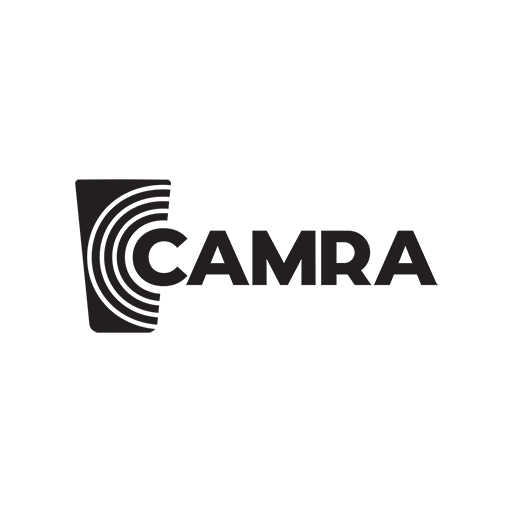
Campaign for Real AleCampaign for Real Ale은 리얼 에일, 사이더, 페리와 전통적인 영국 펍·클럽을 홍보하는 독립적인 자발적 소비자 조직이다.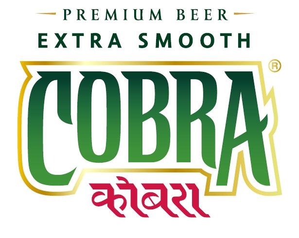
Cobra BeerCobra Beer는 영국에서 생산되는 맥주 브랜드이다.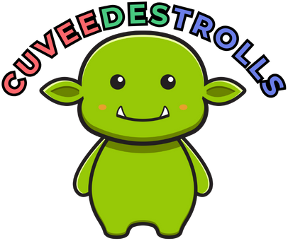
Cuvée des TrollsCuvée des Trolls는 벨기에 Pipaix의 Dubuisson Brewery와 Brasse-Temps 소규모 양조장에서 만드는 맥주이다.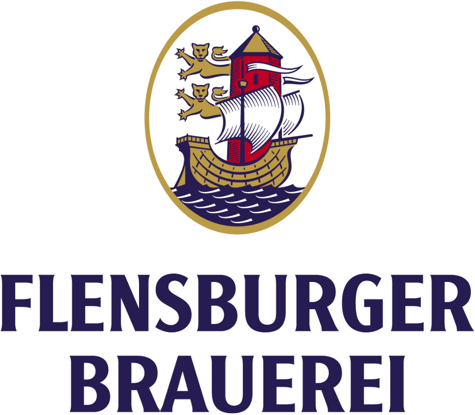
Flensburger BrauereiFlensburger Brauerei는 독일 Schleswig-Holstein주의 플렌스부르크에 있는 양조장이다.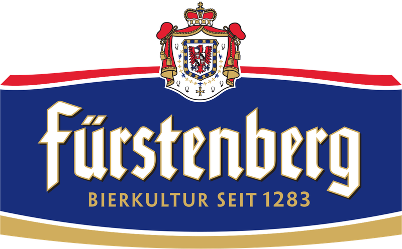
Fürstenberg BreweryFürstenberg Brewery는 독일 도나우에싱겐에 있는 양조장이다.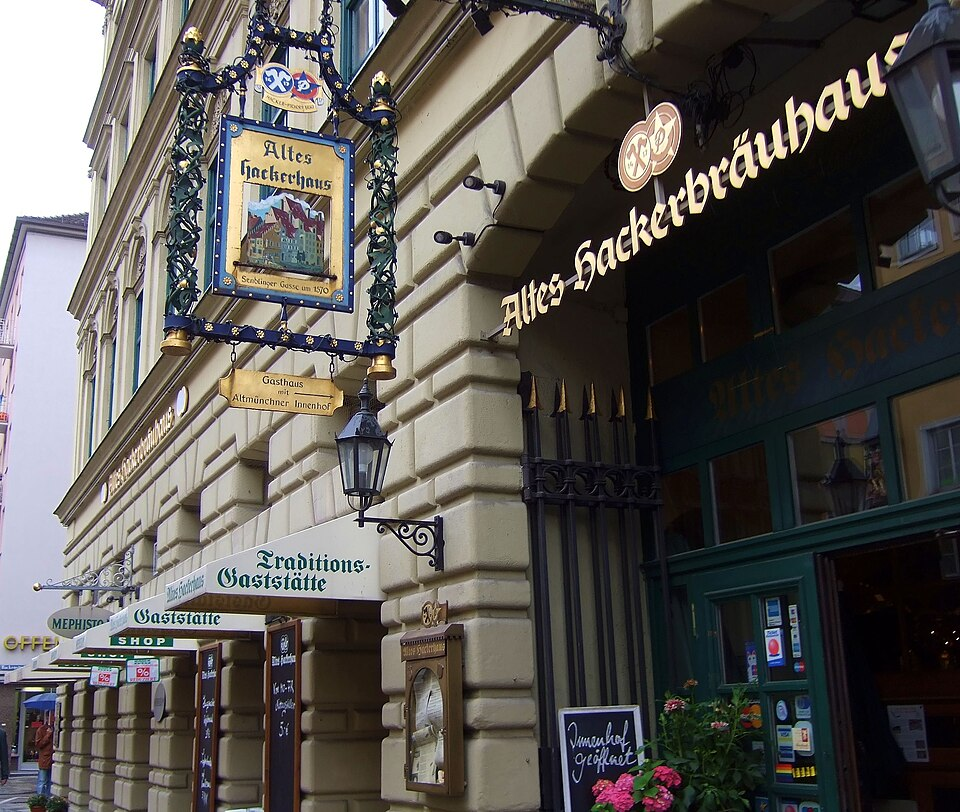
Hacker-Pschorr BreweryHacker-Pschorr Brewery는 독일 뮌헨에 본사를 둔 양조장이다.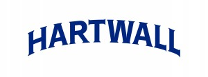
HartwallHartwall은 핀란드 헬싱키에 본사를 둔 음료 회사이다.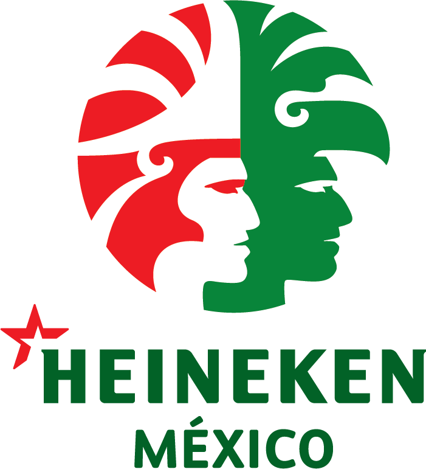
HEINEKEN MexicoHEINEKEN Mexico는 멕시코 몬테레이에 본사를 둔 대형 양조회사로, Cervecería Cuauhtémoc Moctezuma라는 이름으로도 불리며…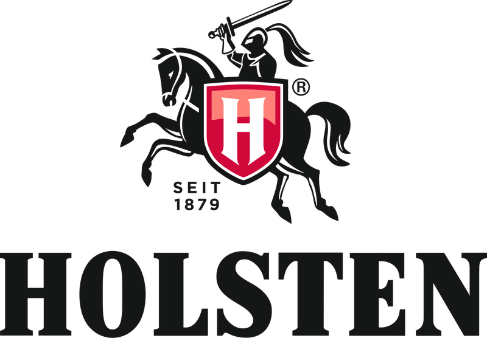
Holsten BreweryHolsten Brewery는 1879년 지금의 함부르크 Altona-Nord 지구에서 설립된 독일의 양조 회사이다.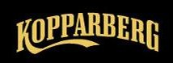
Kopparbergs BreweryKopparbergs Brewery는 스웨덴 Bergslagen에 기반을 둔 양조 및 사이더 회사이다.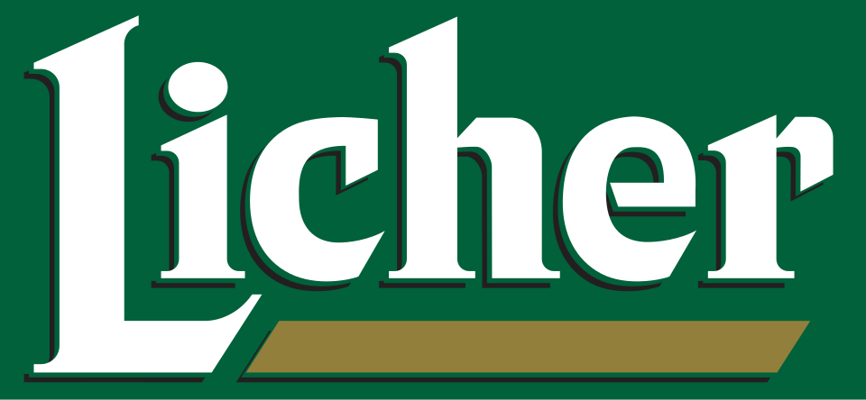
Licher BreweryLicher Brewery는 독일 리히에 본사를 둔 맥주 양조장이다.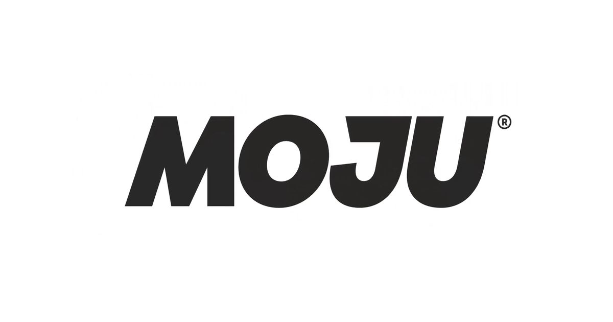
MojuMOJU는 영국의 기능성 음료 브랜드로, 생강·강황 등을 원료로 한 부스터 샷(작은 용량의 건강 음료)을 주력으로 한다.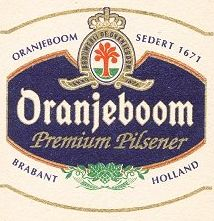
OranjeboomOranjeboom은 1671년 네덜란드 로테르담에서 설립된 맥주 양조장이자 맥주 브랜드이다.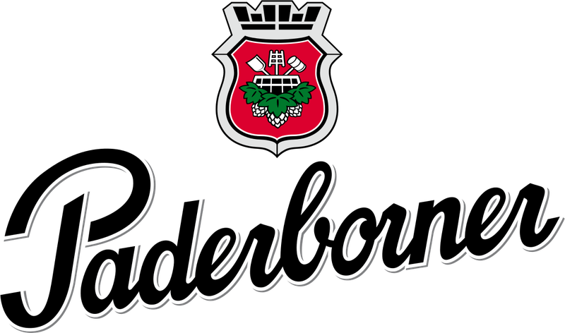
Paderborner BrauereiPaderborner Brauerei는 독일 도시 파더보른에 있는 양조장이다.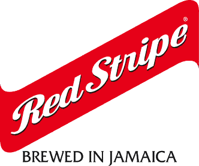
Red StripeRed Stripe는 Desnoes & Geddes가 자메이카와 네덜란드에서 양조하는 알코올 도수 4.7%의 페일 라거 맥주이다.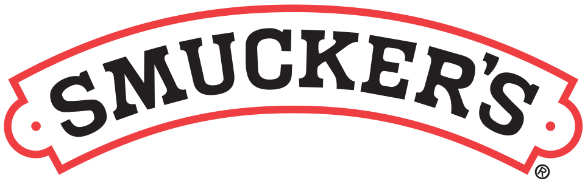
The J.M. Smucker CompanyThe J.M. Smucker Company는 미국 오하이오주 오빌에 본사를 둔 식음료 제품 제조 기업이다.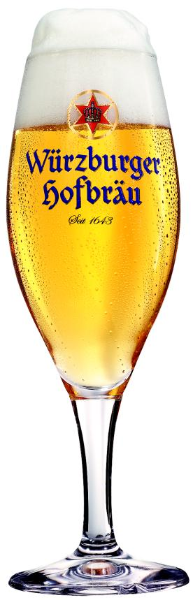
Würzburger HofbräuWürzburger Hofbräu는 독일 뷔르츠부르크에 있는 양조장이다.